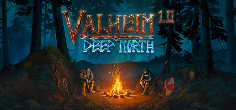
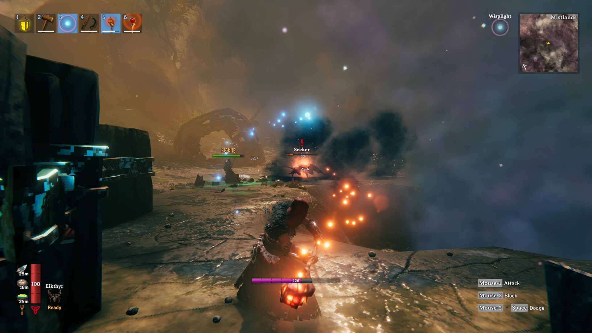
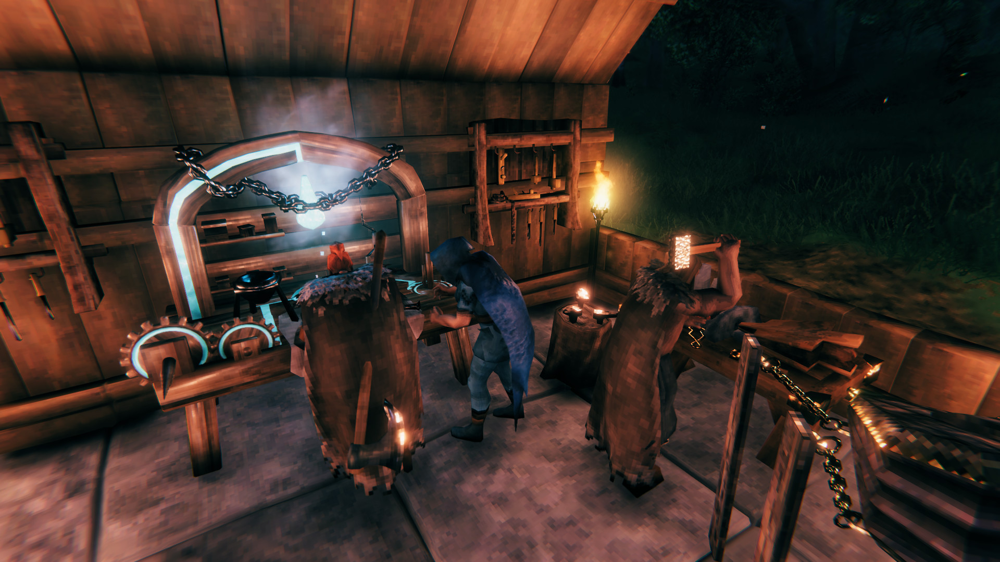

발헤임 1.0 정식출시 동시접속자 19만, 5년 앞서 해보기 끝나고 생긴 일
2026년 9월 9일 수요일, 발헤임이 드디어 1.0 정식판으로 출시됐습니다. 2021년 2월 2일에 앞서 해보기로 첫선을 보인 지 딱 5년 7개월 만인데요, '언젠가 정식 출시하면 제대로 해봐야지' 하고 미뤄두셨던 분들 많으시잖아요. 오늘은 정식 출시 이후 며칠 사이에 무슨 일이 있었는지, 확인된 수치 위주로 정리해볼게요.

발헤임 1.0 정식출시 스팀 상점 페이지에 걸린 대표 이미지예요.
이미지 출처: Steam 발헤임 상점 페이지 · 네이버 본문엔 받아서 재업로드 권장
발헤임이 어떤 게임인지부터 짚고 갈게요
발헤임은 스웨덴 개발사 아이언 게이트(Iron Gate AB)가 만들고 커피 스테인 퍼블리싱(Coffee Stain Publishing)이 배급하는 북유럽 신화 기반 오픈월드 생존·건설 게임입니다. 바이킹 사후세계라는 설정 위에서 자원을 채집해 집이나 성채를 짓고, 바이옴을 옮겨 다니며 보스를 잡고, 직접 만든 배를 타고 바다로 나가는 게 핵심 루프예요. 혼자서도 되지만 친구들과 같이 건설·탐험하는 협동 플레이로 특히 이름을 알린 게임이라, '건설 게임' 하면 곧잘 같이 언급되는 작품이기도 하고요.

미스트랜드에서 시커·비에르네 같은 몬스터와 맞붙는 장면인데요, 바이옴을 옮겨 다니며 보스와 싸우는 발헤임 전투의 실제 모습이에요.
이미지 출처: Steam 발헤임 상점 페이지 스크린샷 · 네이버 본문엔 받아서 재업로드 권장
1.0에서 새로 생긴 것부터 볼게요
이번 1.0 정식 출시의 핵심은 콘텐츠 추가보다는 지원 플랫폼 확장인데요, 기존 PC에 더해 Xbox·PS5·닌텐도 스위치2까지 총 7개 플랫폼으로 동시에 출시됐어요.
- PC — Windows / Mac / Linux
- Xbox One, Xbox Series X|S
- PlayStation 5
- 닌텐도 스위치2 (이번에 처음 합류)
이 중에서 눈에 띄는 건 역시 닌텐도 스위치2예요. 그동안 발헤임은 PC랑 콘솔 몇 종에서만 플레이할 수 있었는데, 이번 1.0을 기점으로 스위치2 유저들도 처음으로 발헤임을 들고 다니면서 즐길 수 있게 됐거든요. 5년 넘게 PC·콘솔에서만 돌던 게임이 휴대용 하이브리드 콘솔까지 넘어온 셈이라, 신규 유입 측면에서는 이번 1.0에서 가장 상징적인 변화라고 봐도 되겠네요.
동시접속자가 19만까지 뛴 이유가 뭘까요
정식 출시 직후 스팀 동시접속자 수가 평소 피크 타임 기준 2만 명대에서 최고 19만 명대까지 치솟았기 때문입니다.
인벤 스팀픽 기사에 따르면 발헤임은 평소 피크 타임 기준 2만 명대의 동시접속자를 유지하던 게임이었는데, 정식 출시 이후 최대 19만 명까지 뛰어올랐다고 해요. 저도 이 수치가 좀 놀라워서 SteamCharts로 따로 교차 확인해봤는데, 실측 숫자가 더 구체적으로 나오더라고요.
| 구분 | 수치 | 기준 |
|---|---|---|
| 24시간 최고 동시접속자 | 190,713명 | 2026.09.11 확인 |
| 지난 30일 최고치 | 190,713명(동일) | 2026.09.11 확인 |
| 지난 30일 평균 | 22,744명(전월 대비 +44.33%) | 2026.09.11 확인 |
| 지금 이 순간 실시간 접속자 | 약 148,778명 | 2026.09.11 확인 |
여기서 헷갈리지 말아야 할 게, 19만 명대는 정식 출시 직후에 찍힌 피크 기준이라는 점이에요. 지금 이 순간 실시간 접속자는 그보다 낮은 14만 8천 명대고요. '지금도 19만 명이 접속 중이다'라고 오해하지 마시고, 출시 첫 며칠 사이의 최고 기록이라고 이해하시면 될 것 같아요. 그래도 평소 대비로는 확실히 몇 배가 뛴 수치라, 5년간 앞서 해보기로 다져온 팬층에 1.0을 기다려온 신규 유저까지 한꺼번에 몰린 결과로 보여요.
참고로 발헤임의 역대 최고 동시접속자 기록은 앞서 해보기 출시 직후인 2021년 2월에 찍힌 498,478명이에요. 이번 19만 명대는 그 역대 기록에는 못 미치지만, 평소 2만 명대 흐름을 생각하면 여전히 큰 폭의 반등인 셈이죠.
최근 동시접속자 추이를 그래프로 보면 급증 폭이 한눈에 들어와요.
메타크리틱 점수는 몇 점인가요
직접 재확인한 현재 메타크리틱 점수는 89점(평론가 리뷰 14건, 'Generally Favorable')입니다.
출시 전날인 9월 8일 리뷰 엠바고가 풀린 시점엔 평론가 리뷰 7건으로 91점이었는데, 표본이 워낙 적어서 확정 점수로 보기엔 일렀어요. 이후 리뷰가 14건으로 늘면서 89점으로 조정된 게 지금 시점 기준이고요. 스팀 상점 페이지에서 직접 확인해봐도 같은 89점이 떠 있더라고요. 91점이라는 숫자만 보고 오신 분들은, 최신 표본 기준으로는 89점이 맞다고 생각하시면 됩니다.
발헤임, 좋은 점과 아쉬운 점은 뭐가 있을까요
발헤임 1.0을 아직 오래 붙잡고 해본 건 아니라서, 이번 첫인상은 제가 직접 겪은 경험담이 아니라 공개된 정보와 커뮤니티 반응을 기준으로 정리했다는 점을 먼저 밝힐게요.
좋게 볼 만한 점은 역시 5년간 앞서 해보기로 다져진 콘텐츠 볼륨이에요. 그 긴 시간 동안 바이옴·보스·건설 요소가 계속 추가돼 왔으니, 처음 시작하는 입장에서는 오히려 '완성된 상태의 발헤임'을 만나게 되는 셈이고요. 여기에 이번 1.0으로 닌텐도 스위치2까지 플랫폼이 넓어지면서, 콘솔·휴대용으로도 접근하기 쉬워졌다는 것도 장점으로 꼽을 만합니다.
아쉬울 수 있는 점도 짚어보면, 발헤임을 이미 앞서 해보기로 오래 즐긴 유저 입장에서는 1.0이라고 해도 '완전히 새로운 게임'을 만나는 느낌까지는 아닐 수 있어요. 출시 시점 콘텐츠 자체는 최근 앞서 해보기 버전과 크게 다르지 않을 가능성이 높고요. 또 동시접속자가 평소보다 몇 배씩 몰리는 시기라, 서버·매치메이킹 쪽에서 일시적인 혼잡을 겪을 수도 있다는 점은 감안하고 들어가시는 게 좋겠죠.
이런 분들께 추천드릴 만한데요, 친구들과 같이 집 짓고 탐험하는 협동 생존 게임을 좋아하시는 분, 그동안 앞서 해보기라는 이유로 시작을 미뤄오신 분, 그리고 이번에 새로 열린 닌텐도 스위치2나 PS5로 발헤임을 처음 만나보고 싶으신 분이라면 지금이 진입하기 딱 좋은 타이밍이랍니다.

모닥불 옆 작업대에서 같이 갑옷을 만들고 수리하는 장면이에요, 발헤임다운 아기자기한 협동 포인트죠.
이미지 출처: Steam 발헤임 상점 페이지 스크린샷 · 네이버 본문엔 받아서 재업로드 권장
자주 묻는 질문
Q. 발헤임 지금 스팀에서 얼마에 살 수 있나요?
직접 스팀 상점 페이지를 확인해보니 단독 구매 기준으로는 정가만 표시돼 있고 별도 할인은 붙어 있지 않았어요(다른 게임과 묶인 번들 상품엔 할인이 걸릴 때가 있고요). 정확한 가격·할인 여부는 방문하시는 시점에 스팀 상점 페이지에서 직접 확인하시는 게 가장 정확합니다.
Q. 지금 접속하면 19만 명 정도가 같이 있는 걸 보게 되나요?
아니요, 그건 아니에요. 19만 명대는 정식 출시 직후에 찍힌 24시간 최고 기록이고, 지금 이 순간 실시간 접속자는 그보다 적은 14만 8천 명대예요. 그래도 평소 2만 명대였던 걸 생각하면 여전히 높은 수준이긴 합니다.
참고한 곳
· 인벤 - 발헤임 1.0 정식출시 소식
· 인벤 - 발헤임 스팀픽(동시접속자 관련)
· Steam - Valheim 상점 페이지
발헤임 정리
정리하면, 발헤임은 2021년 2월 2일 앞서 해보기를 시작해 2026년 9월 9일 수요일에 PC·Xbox·PS5·닌텐도 스위치2까지 7개 플랫폼으로 1.0 정식 출시됐고, 출시 직후 스팀 동시접속자가 평소 2만 명대에서 최고 19만 명대(정확히는 24시간 기준 190,713명)까지 치솟았어요. 메타크리틱은 표본이 늘면서 91점에서 89점으로 조정된 상태고요. 5년 넘게 앞서 해보기로만 만나던 게임이 이번에 제대로 완성판으로 나온 만큼, 협동 생존·건설 게임을 좋아하신다면 한 번쯤 관심 가져보시면 좋을 것 같아요.